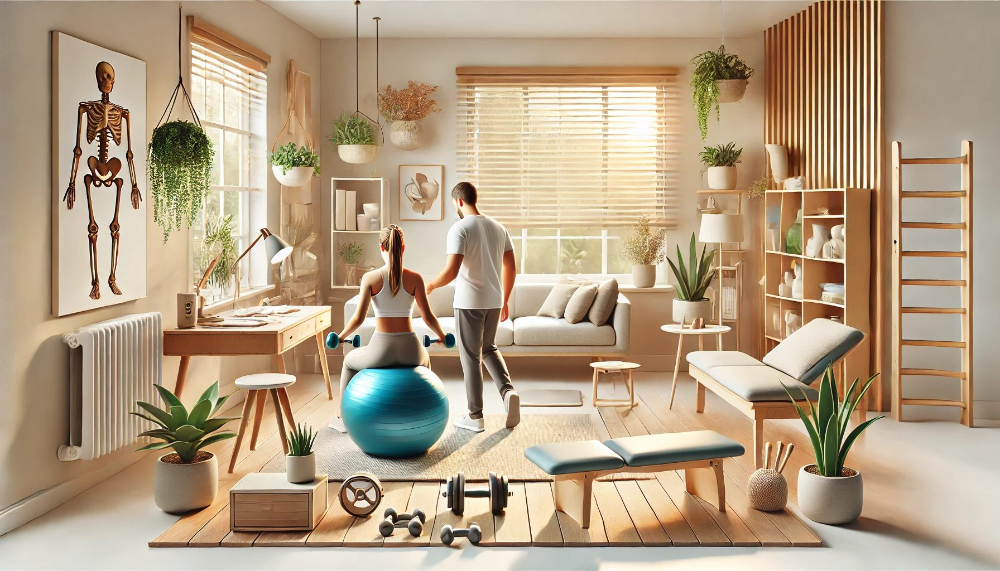
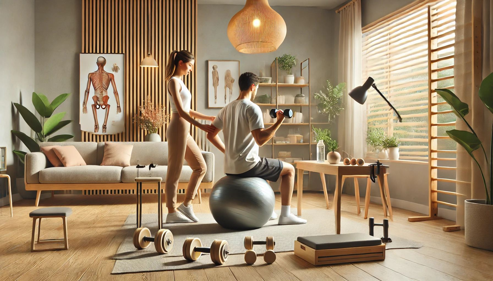

Situações em que a fisioterapia domiciliar pode ser indicada
Entenda quando uma avaliação profissional pode indicar o atendimento em domicílio.
Informações práticas para apoiar o tratamento e melhorar a rotina de quem recebe fisioterapia domiciliar.

Entenda quando uma avaliação profissional pode indicar o atendimento em domicílio.

Boas práticas de rotina para proteger as articulações e favorecer a funcionalidade.
Cuidados simples que podem contribuir para o conforto, a segurança e a adesão ao tratamento.